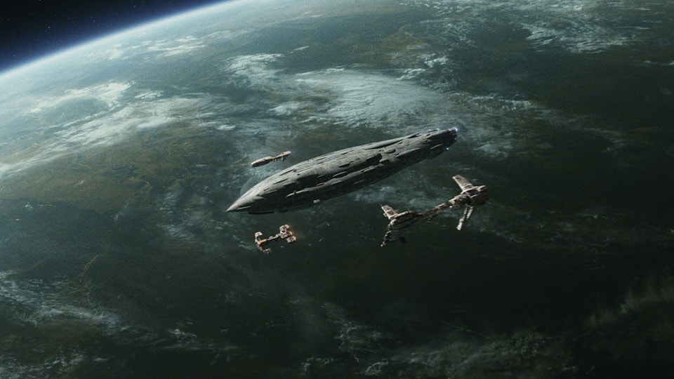

"We're not alone. Good people will fight if we lead them.- Poe Dameron"
About the Resistance
The Resistance is a resistance movement and private paramilitary force led by General Leia Organa that opposes the First Order. It is a splinter of the military of the New Republic and takes inspiration from the Rebel Alliance, which had established the democratic New Republic after its war with the Galactic Empire. Many of the senior officers of the Resistance also served in the Rebel Alliance thirty years prior, including General Organa and Admiral Ackbar, while some junior officers had parents who served in the Rebel Alliance, as is the case with Poe Dameron.
The Resistance was a precautionary movement founded by Senator Leia Organa in response to the rise of the First Order, a military dictatorship that rose from the fallen Old Empire in the galaxy's unexplored space, the Unknown Regions, by staunch, loyal former Imperial hardliners. The New Republic did not deem the First Order to be a credible threat, so Senator Organa and several other Rebel veterans, who believed the First Order to be a threat to peace, broke away from the New Republic's military and founded the Resistance to check the First Order. The First Order used its star system destroying superweapon on Starkiller Base to shatter the New Republic government and starfleet, leaving the galaxy vulnerable for conquest, only to be opposed by the Resistance, whose fears had come true.
The First Order, a remnant of Palpatine regime, rose to power in the Unknown Regions and repeatedly ignored and violated the Galactic Concordance, rebuilding former Imperial fleets and mobilizing a new generation of stormtrooper forces in its expanding armies. Despite this, the heavily demilitarized New Republic did not view the First Order as a true threat and disregarded it entirely, leading to several Rebel veterans led by General Leia Organa to break away and form the Resistance as a check on the designs of the First Order. The Resistance, which hearkened back to the Rebel Alliance, recruited from both the New Republic military and worlds that experienced the worst of the Empire. Though the Republic tolerated the Resistance, it did not officially support the private military force, though secretly some within the Republic Senate, who shared the fears of the Resistance, funded and armed the group.
Starkiller Base
Starkiller Base was a military base located in the ice planet of Ilum in the Unknown Regions. The base served as a stronghold of the First Order thirty years after the Battle of Endor. Commanded by an unofficial triumvirate of General Armitage Hux, Kylo Ren and Captain Phasma, it was armed with a superweapon capable of destroying entire star systems halfway across the galaxy. The First Order viewed this ability as an evolution of the planet-destroying capabilities of the Galactic Empire's Death Star designs, with the weapon serving as the ultimate culmination of Old Empire research into dark energy translations and hyperspace tunneling.
The base and planet was ultimately destroyed by a Resistance attack due to a weak point exploited by pilot Poe Dameron, causing the implosion of the entire planet as the superweapon was firing upon the Resistance base on D'Qar. The stored stellar energy then expanded, causing the planet to turn into a star.